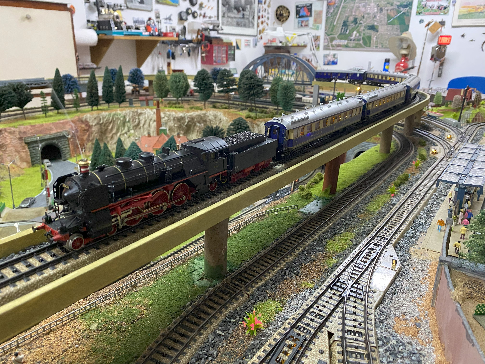
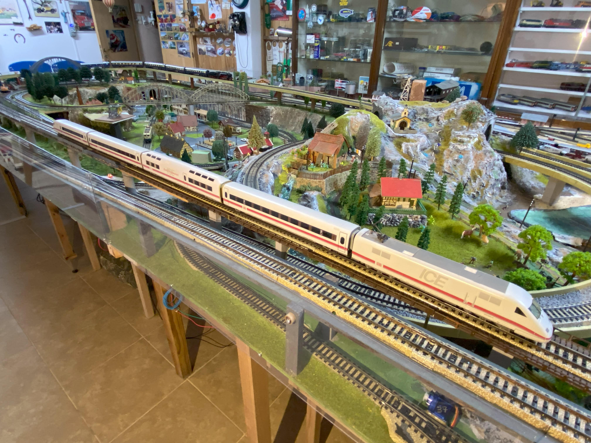
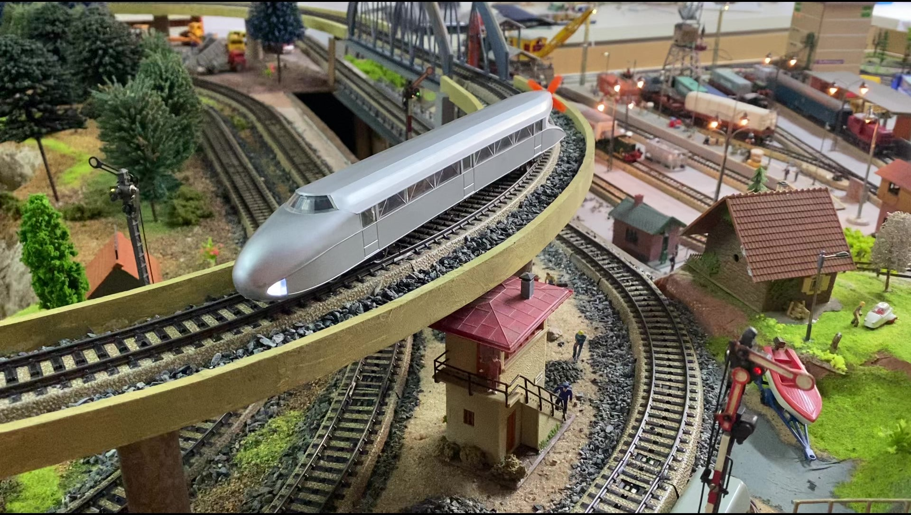

Formación Rheingold

Un tren de lujo que recorría el curso del Rhin desde la costa de Holanda, Hoek van Holland está en la entrada del canal desde el Mar del Norte, hasta Basilea en Suiza.
Empezaron a prestar sus servicios en el año 1928 y se mantuvieron hasta el comienzo de la II Guerra Mundial en 1939. Sus coches Pullman de primera clase en crema y azul eran absolutamente lujosos. Disponían de compartimentos privados para dos y cuatro personas y, exceptuando, las mesas de los extremos que eran para tres, el resto del coche estaba compuesto por mesas para dos personas. Un total de 20 viajeros en el coche con cocina y 28 en el salón sin cocina.
Tren irrepetible que desapareció al final de la guerra y que, con un aire más popular, renació en 1951 con la denominación de Rheingold Express compuesto por Schürzenschnellzugwagen del año 1939 pintados en azul.
Formación ICE

InterCityExpress, normalmente abreviado como ICE, designa al sistema de trenes de alta velocidad de los ferrocarriles de Alemania que circulan por dicho país y por países vecinos.
Estos trenes fueron desarrollados a partir del año 1985 por Siemens AG según las indicaciones de los Ferrocarriles Federales Alemanes (Deutsche Bundesbahn o DB). La primera generación, conocida como "ICE 1", alcanza una velocidad máxima de 280 km/h. Posteriormente se desarrolló una variante del primer tren, denominada ICE 2. Desde 2000 están circulando los ICE 3, la versión más moderna y más rápida de estos trenes, que alcanza una velocidad de 330 km/h.
Tren Zeppelin

Sus inicios se remontan a hace mas de un siglo, a la primera mitad de 1920. Para otoño el tren zepelín, fabricado por la compañía alemana Deutsche Reichsbahn, protagonizaba ya su primera puesta en marcha. El vehículo, de 20 toneladas y dos ejes, se impulsaba con un motor BMW V-12 de 46 litros y una enorme hélice instalada en la parte trasera que en el verano de 1931 le permitieron superar los 220 km/h, marca que algunas fuentes perfilan como 230 km/h (143 mph).
A finales de los 30 empezaban a soplar ya vientos de guerra y las autoridades nazis vieron más adecuado desguazarlo en 1939 y reaprovechar sus materiales, incluidos sus potentes motores, que acabaron en bombarderos ligeros.